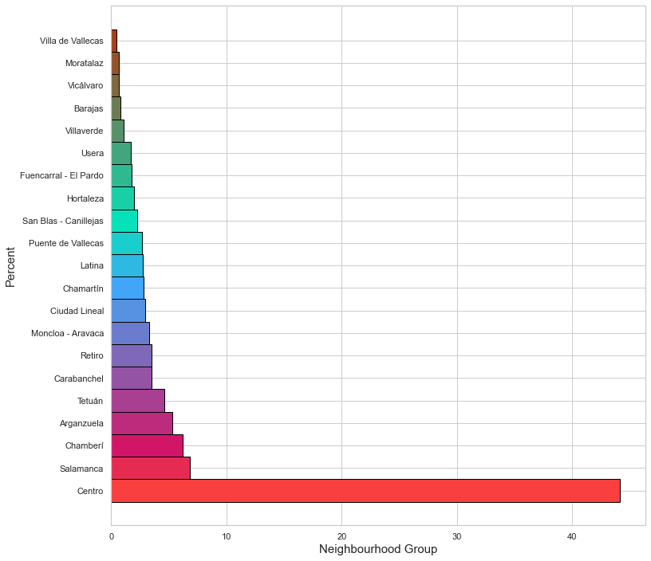

This is what you should know about Airbnb Madrid

Madrid is the capital city of Spain, with around 3.223 million people living in the city. This is a lot. Just to put this into context, the whole country of Norway has 5.279 million habitants. This means we could fit 61% of the entire country's population into this city.
A lot of people means a lot of houses, and a big city means tourism. This is the perfect combination for a huge offering of Airbnb accommodations. In this post, we are going to ask ourselves some questions.
- Does Madrid have the same offer of accommodation all around the city, or are there neighbourhoods that have more of it?
- If a neighborhood group has a lot of accommodations, does it mean that each of its individual neighbourhoods has them too?
- Are the prices equal all over Madrid?
- How are the prices and availability rates in Madrid over the months?
- How well can we fit a model with the data provided to estimate the price of an accommodation?
To answer all this questions, I will be using a dataset from Airbnb, available for free. This dataset has a lot of information about each single accommodation in the city of Madrid
Does Madrid have the same offer of accommodation all around the city, or are there neighbourhoods that have more of it?
To begin with, let's use the data to discover how much offer each neighbourhood group have. With this info, I created a bar plot. Each bar and colour represent a neighbourhood group. The bigger the bar, the more of the total offer the neighborhood group has
As we can see in the box plot above, there is a neighborhood group that have way more to offer than the others. The neighborhood group "Centro" represents more than 40% of the total accommodation offered in the whole city of Madrid. Centro in English means "center of the city", so it makes sense that people using Airbnb accommodation are normally tourists that go to the center of the city.
Each neighborhood group is formed by some neighborhoods. So, if a neighborhood group has a lot of offers, does it mean that each neighborhood inside of this group has them too?
If a neighborhood group has a lot of accommodations, does it mean that each of its individual neighbourhoods has them too?
Let's try to answer this question based on a plot. To visualize this, I make the same plot as before, but this time with each individual neighborhood's offer. The color of each bar will represent the neighborhood group they are part of. If the bar plot gets the same arcoiris pattern, the answer will be yes.
As we can see, the plot doesn't show an arcoiris pattern, so the answer to this question is no. Although we didn't get this pattern, we can see that the first 6 neighborhoods are part of the central zone, which makes sense. Apparently, the rest of the offer is more or less equally distributed all around the rest of the city.
Are the prices equal all over Madrid?
Now, let's take a look at the prices around the city. In all the cities arround the world there are more expensive neighborhoods than others. Let's see if we can see this difference in the Airbnb prices.
This bar plot represents the mean of the prices in the neighborhood group. It is cool to see that the neighborhood group with more to offer is not the one with the higher mean price. The most expensive neighborhood is the center of the city. Maybe this is true for rents in long terms meaning, but for Airbnb offer this is not. Maybe because they offer accommodations more focus on tourism in that part.
Although the plot above is clear, I would like to see the way the prices are distributed.
In this box plot, we can see that the prices are not that different all around Madrid. But there are some neighborhood groups that have a lot of variety within their prices and others that have more similar prices all around the neighborhood group.
How are the prices and availability rates in Madrid over the months?
The city of Madrid receives a lot of visitors throughout the year, but what are the availability and price of accommodations over the months?
We can see that the prices and availability rate seem to be dependent on the month. People seem to visit Madrid more in the winter and spring months. This can be due to the hot weather Madrid experiences in the summer months, and, as a Madrid citizen, I understand them. The month with the highest availability rate is also the cheapest. This can be caused by the offer and demand effect.
How well can we fit a model with the data provided to estimate the price of an accommodation?
Last but not least, let's try to create a linear model that estimates the price of an accommodation depending on the other features. Since this project is part of my learning process, I want to see with my own experience if a linear model improves it's performance when using categorical variables
To create the model, first, I select all the numercial variables. After doing so, I evaluate it.
It's seems like working with this features is useful, but the model is not optimal, since the model will only explain 44% of the variance.
Let's use some categorical features, in order to try to improve the model. After creating the dummy variables we train the linear model.
It seem to be better than the model that only works with numerical variables, but at the end of the day, it's not good enough
This model will poorly estimate the prices of the accommodation, so it won't be used, but maybe if we had more data, we could fit a better model.
Conclusions
Madrid is big city, and so, it receives a lot of tourists every year. If you, the reader, are planning to visit this beautiful city, feel free to use this information here provided to find the accommodation and time of the year which better fits you.
Link to the Github repository HERE